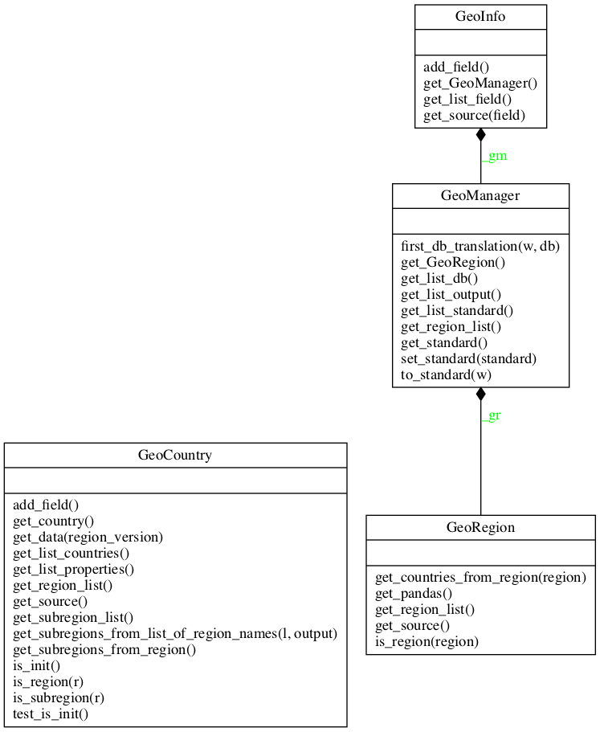

coa.geo module
Project : PyCoA Date : april 2020 - march 2021 Authors : Olivier Dadoun, Julien Browaeys, Tristan Beau Copyright ©pycoa.fr License: See joint LICENSE file
Module : coa.geo
About :
Geo classes within the PyCoA framework.
GeoManager class provides translations between naming normalisations of countries. It’s based on the pycountry module.
GeoInfo class allow to add new fields to a pandas DataFrame about statistical information for countries.
GeoRegion class helps returning list of countries in a specified region
GeoCountry manages information for a single country.
Summary
Classes:
GeoCountry class definition. |
|
GeoInfo class definition. |
|
GeoManager class definition. |
|
GeoRegion class definition. |
Class diagram:
{kind=link}
Reference
- class GeoCountry(country=None, **kwargs)[source]
Bases:
objectGeoCountry class definition. This class provides functions for specific countries and their states / departments / regions, and their geo properties (geometry, population if available, etc.)
The list of supported countries is given by get_list_countries() function.
- add_field(**kwargs)[source]
Return a the data pandas.Dataframe with an additionnal column with property prop.
Arguments : input : pandas.Dataframe object. Mandatory. field : field of properties to add. Should be within the get_list_prop() list. Mandatory. input_key : input geo key of the input pandas dataframe. Default ‘where’ geofield : internal geo field to make the merge. Default ‘code_subregion’ region_merging : Boolean value. Default False, except if the geofield contains ‘_region’.
If True, the merge between input dans GeoCountry data is done within the region version of the data, not the subregion data which is the default behavious.
overload : Allow to overload a field. Boolean value. Default : False
- get_data(region_version=False)[source]
Return the whole geopandas data. If region_version = True (not default), the pandas output is region based focalized.
- get_subregions_from_list_of_region_names(l, output='code')[source]
Return the list of subregions according to list of region names given. The output argument (‘code’ as default) is given to the get_subregions_from_region function.
- get_subregions_from_region(**kwargs)[source]
Return the list of subregions within a specified region. Should give either the code or the name of the region as strings in kwarg : code=# or name=# Output default is ‘code’ of subregions. Can be changer with output=’name’.
- is_region(r)[source]
Return False if r is a not a known region, return the correctly capitalized name if ok
- class GeoInfo(gm=0)[source]
Bases:
objectGeoInfo class definition. No inheritance from any other class.
It should raise only CoaError and derived exceptions in case of errors (see pycoa.error)
- add_field(**kwargs)[source]
this is the main function of the GeoInfo class. It adds to the input pandas dataframe some fields according to the geofield field of input. The return value is the pandas dataframe.
Arguments : field – should be given as a string of list of strings and
should be valid fields (see get_list_field() ) Mandatory.
input – provide the input pandas dataframe. Mandatory. geofield – provide the field name in the pandas where the
location is stored. Default : ‘location’
- overload – Allow to overload a field. Boolean value.
Default : False
- class GeoManager(standard='iso2')[source]
Bases:
objectGeoManager class definition. No inheritance from any other class.
It should raise only CoaError and derived exceptions in case of errors (see pycoa.error)
- first_db_translation(w, db)[source]
This function helps to translate from country name to standard for specific databases. It’s the first step before final translation.
One can easily add some database support adding some new rules for specific databases
- get_list_db()[source]
return supported list of database name for translation of country names to standard.
- get_list_standard()[source]
return the list of supported standard name of countries. First one is default for the class
- set_standard(standard)[source]
set the working standard type within the GeoManager class. The standard should meet the get_list_standard() requirement
- to_standard(w, **kwargs)[source]
Given a list of string of locations (countries), returns a normalised list according to the used standard (defined via the setStandard() or __init__ function. Current default is iso2.
- first arg – w, list of string of locations (or single string)
to convert to standard one
output – ‘list’ (default), ‘dict’ or ‘pandas’ db – database name to help conversion.
Default : None, meaning best effort to convert. Known database : jhu, wordometer… See get_list_db() for full list of known db for standardization
- interpret_region – Boolean, default=False. If yes, the output should
be only ‘list’.
- class GeoRegion[source]
Bases:
objectGeoRegion class definition. Does not inheritate from any other class.
It should raise only CoaError and derived exceptions in case of errors (see pycoa.error)